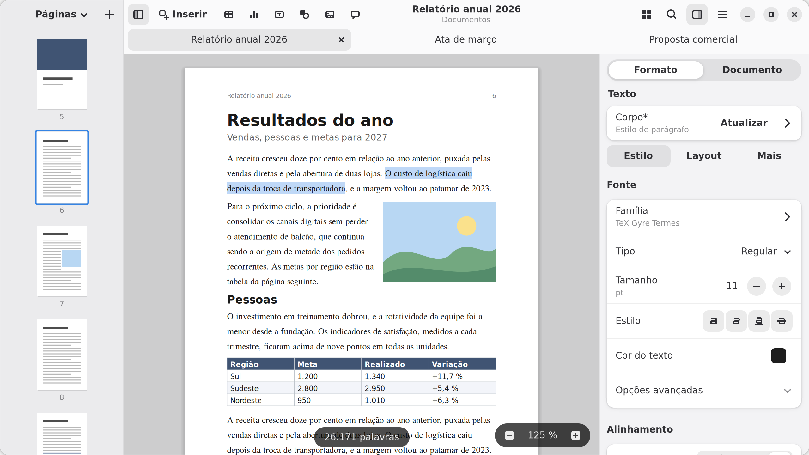
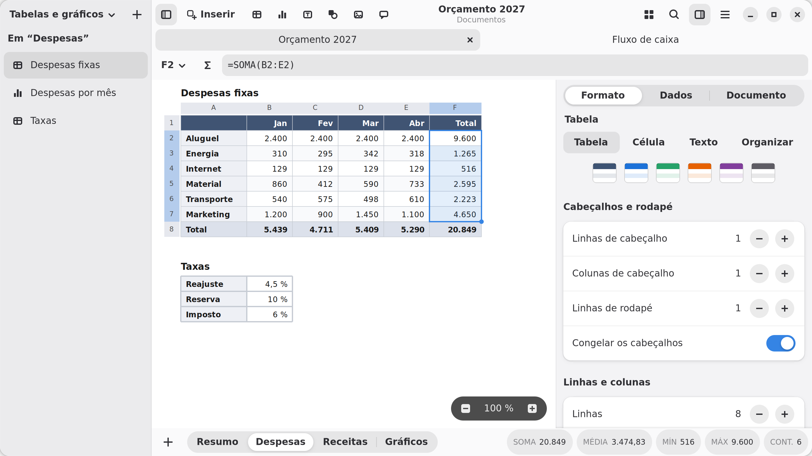
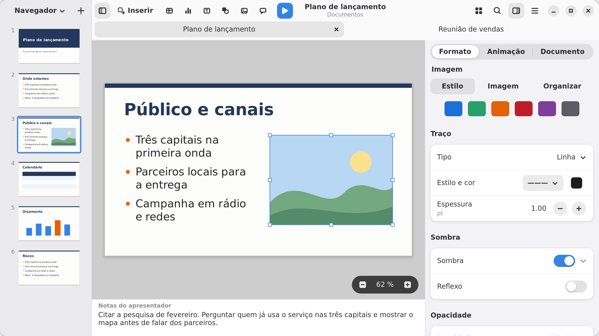

Escreva, calcule e apresente
por Wagner Brahm, com Claude
- Software livre
- Feito para o GNOME
- Em desenvolvimento
Uma suíte de escritório feita para o GNOME
O Desk é uma suíte de escritório livre com três aplicativos desenhados para funcionar como um só, entre si e com o ambiente GNOME. Eles compartilham o mesmo modelo de documento, a mesma janela e o mesmo jeito de fazer as coisas: uma tabela, um gráfico ou um bloco de texto se comporta igual nos três, e tudo tem a aparência e o comportamento do resto do seu desktop. Cada aplicativo é simples e focado no seu trabalho, sem abrir mão da força que o trabalho de verdade pede.
-

Desk Writer
Processador de texto e diagramação no mesmo aplicativo, do TCC ao folheto da padaria: estilos, seções e colunas, notas de rodapé, sumários, e imagens e formas com o texto correndo em volta.

-

Desk Tables
Planilhas diagramadas como uma página: várias tabelas e gráficos soltos em cada folha, fórmulas fáceis de ler e gráficos bonitos. É para organizar e calcular, não uma ferramenta de BI nem um banco de dados.

-

Desk Slides
Apresentações com temas, transições e animações que fazem a plateia esquecer de olhar o celular, e uma tela do apresentador com suas notas e o próximo slide.

São maquetes da janela que os três aplicativos vão compartilhar, desenhadas com os widgets reais do GTK 4 e da Libadwaita em 1280 × 720, a menor tela para a qual o Desk é feito.
Por que o Desk
O Desk não nasceu da falta de uma suíte de escritório no Linux. O LibreOffice e o ONLYOFFICE cumprem muito bem esse papel. Mas nenhum dos dois segue as diretrizes de interface do GNOME, e nenhum se sente em casa no desktop GNOME, que é onde eu passo os meus dias.
Tem também uma questão de gosto. Eu prefiro ferramentas simples, e simples não quer dizer fraco. Então, em vez de seguir na direção do Microsoft 365, para onde o LibreOffice tende hoje em dia (mesmo tendo origem no StarOffice, que era bem original na época), eu olhei para o outro lado: para o iWork da Apple.
Eu sempre fui fã do iWork '09, o de antes da colaboração online, da IA e da assinatura. Usava todo dia, e nunca superei de verdade a passagem de 32 para 64 bits, que quebrou a compatibilidade com os meus arquivos e levou embora vários recursos únicos e muito úteis. Para ser justo, o Pages, o Keynote e o Numbers de hoje já recuperaram muitos deles, alguns atrás de um paywall.
O Desk não é um clone do iWork. Eu uso o iWork como régua do que uma suíte simples e capaz consegue fazer, não como planta para copiar. O objetivo é um pacote de escritório com aplicativos mais simples, focados e perfeitamente integrados ao GNOME. O Desk Tables não tenta ser uma ferramenta de BI ou um banco de dados, por exemplo: ele é uma planilha, e uma boa planilha.
O que você pode esperar:
- Três aplicativos que compartilham o mesmo modelo de documento, a mesma janela e o mesmo Inspetor, então o que você aprende em um serve nos outros.
- Feito com Rust, GTK 4 e Libadwaita, seguindo as diretrizes de interface do GNOME, com documentos em abas e salvamento automático com versões.
- Os documentos são salvos em OpenDocument (ODF). Seus arquivos do iWork, antigos e novos, e do Microsoft Office também vão abrir.
- Nada de IA, conta online ou assinatura para usar qualquer coisa.
- E se a comunidade pedir com muito carinho, a gente porta para o Plasma. :)
Como o Desk é construído
Algumas decisões dão forma a todo o Desk. Elas estão registradas, com seus motivos, nas páginas de arquitetura e de decisões do repositório, em inglês.
- O motor fica separado da interfaceO modelo de documento, a composição do texto, a paginação, a renderização, as fórmulas, os gráficos e os formatos de arquivo são bibliotecas Rust sem nada de GTK. Só a biblioteca de interface e os três aplicativos usam GTK 4 e Libadwaita, e o CI confere isso a cada mudança. É assim que o desk-convert já gera PDF pela linha de comando, e é assim que outros projetos podem reaproveitar o motor.
- Bibliotecas de formato que qualquer um pode usarAs bibliotecas de OpenDocument, do iWork e de fórmulas não dependem de nenhuma outra parte do Desk e têm licença MPL-2.0, para que outros programas, livres ou não, leiam e gravem os mesmos arquivos. Os aplicativos são GPL-3.0-or-later.
- Um modelo de documento, um jeito de mudá-loOs três aplicativos compartilham um só modelo, então um objeto copiado de um para outro continua sendo o mesmo objeto. Toda mudança é uma operação com inversa, o que dá o desfazer de graça, e o mesmo documento sempre gera as mesmas páginas na tela, no PDF e nos testes.
- OpenDocument em primeiro lugarOs documentos são ODF padrão. Quando o ODF não tem lugar para um recurso, o Desk acrescenta uma extensão documentada que outros programas podem ignorar sem risco. Arquivos do iWork e do Microsoft Office entram por filtros de importação, que avisam o que não conseguiram manter.
- GNOME nativo, nada emprestadoUm widget da Libadwaita sempre que existe um. Quando não existe, o Desk constrói um que segue as diretrizes do GNOME e o revisa a cada nova Libadwaita. Ortografia, impressão, fontes, seletores de arquivo e leitor de tela vêm da plataforma.
- Flatpak no GNOME 51, e nada onlineO Desk é distribuído como Flatpak sobre o runtime do GNOME 51, com GTK 4.24 e Libadwaita 1.10. Não tem servidor nem conta: tudo funciona offline.
- Medido, não chutadoCada recurso é uma linha de um inventário, com sua fase e seus testes, e o resultado é comparado com documentos feitos pelo próprio iWork. Os testes de interface usam os aplicativos pela árvore de acessibilidade, como faz um leitor de tela.
Onde o Desk está hoje
O Desk Writer veio primeiro, porque o motor de texto é a parte mais difícil e os outros dois aplicativos dependem dele. Ele já tem o motor de texto, estilos e estrutura do documento, ortografia e gramática, imagens, formas e mídia, tabelas e gráficos, e abre documentos do Pages '09 com a diagramação do Pages. Está em beta, ainda na janela antiga. O Desk Tables e o Desk Slides já têm sua janela e motores de tabelas, fórmulas, gráficos e animação, que os aplicativos ainda não usam.
Em novembro de 2026 eu defini novos objetivos para o projeto: o Desk agora se mede pelos recursos do Pages, do Numbers e do Keynote atuais, mantendo o que o iWork '09 fazia e as versões novas perderam, e deixando de fora o que precisa de IA, de serviço online ou de pagamento. O Desk é feito por mim junto com o Claude, a IA da Anthropic, com o rigor que se espera de qualquer equipe: cada recurso é uma linha de um inventário, cada mudança passa por revisão e por um CI, e o resultado é comparado com documentos feitos pelo próprio iWork. O painel de andamento mostra cada recurso, fase e previsão, atualizado a cada mudança.
Próximos passos
Depois de uma base comum, os três aplicativos podem avançar lado a lado. Contando um depois do outro, a previsão é chegar à paridade de recursos perto do fim de janeiro de 2027. É uma estimativa, não uma promessa, e ela é corrigida ao fim de cada fase.
-
Desk Writer, primeira rodada beta
Motor de texto, estilos, estrutura do documento, ferramentas de escrita, objetos, tabelas e gráficos, e abertura de documentos do Pages '09.
-
Novos objetivos agora
Os objetivos, as decisões, o inventário de recursos, a janela escolhida e o plano que guiam tudo o que vem abaixo.
-
Base comum
A janela compartilhada nos três aplicativos, documentos em abas, salvamento automático com versões e os documentos de referência refeitos no iWork atual.
-
Desk Writer
O comportamento do Pages atual, comentários e controle de alterações, modelos de página e mala direta, novos objetos e gráficos, arquivos do Word e do Pages, impressão e exportação.
-
Desk Tables
Arquivos próprios, células e fórmulas, ordenação, filtros, categorias e tabelas dinâmicas, gráficos, e arquivos do Excel e do Numbers.
-
Desk Slides
Temas e mestres, texto e mídia, transições e animações, apresentação com a tela do apresentador, e arquivos do PowerPoint e do Keynote.
-
Entre os aplicativos, e a versão 1.0
Gráficos e tabelas ligados entre documentos que se atualizam quando a origem muda, copiar e colar entre os aplicativos, e o relatório final de paridade.
Instalar
O Desk Writer está em beta, como Flatpak no repositório do próprio Desk. Adicione o repositório e instale o aplicativo:
flatpak remote-add --if-not-exists desk https://brahm.github.io/desk/desk.flatpakrepo
flatpak install desk br.com.brahm.Desk.Writer//betaOu abra o desk-writer-beta.flatpakref para instalar pelo GNOME Software. É uma versão de testes: guarde uma cópia dos documentos que abrir com ela. Para a versão gerada toda noite a partir do código mais recente, use //nightly ou o desk-writer-nightly.flatpakref. Também dá para compilar o Desk a partir do código-fonte.
O Desk precisa de uma tela de pelo menos 1280 × 720 pixels, depois da escala da tela: um computador de mesa, um notebook ou um tablet deitado. Celulares e telas menores não têm suporte. Os aplicativos abrem neles mesmo assim, com um aviso de que partes da janela podem não caber.
Participe
O Desk é software livre e ainda está no começo, então toda ajuda conta. Somos uma pessoa e uma IA: paciência com a gente, e obrigado desde já.
- Reportar um problemaAchou um bug? Conte o que aconteceu e como repetir.
- Pedir uma funcionalidadeSente falta de alguma coisa que você usa todo dia? Peça.
- Enviar documentos antigos do iWorkArquivos do Pages, do Numbers e do Keynote, principalmente do iWork '09, ajudam a testar a compatibilidade.
- Contribuir com códigoO código está no GitHub, em Rust, com o CI rodando tudo antes de cada merge.
- TraduzirA interface está em inglês e em português do Brasil. Acrescente o seu idioma com um editor de PO, como o Gtranslator ou o Poedit.
- Acompanhar o andamentoO painel mostra cada recurso, fase, pendência e a previsão, atualizado a cada mudança.
Detalhes
- VersãoDesk Writer beta, com versões noturnas
- LicençaAplicativos em GPL-3.0-or-later, bibliotecas de formato de arquivo em MPL-2.0
- Feito comRust, GTK 4 e Libadwaita
- PlataformaGNOME 51, distribuído como Flatpak
- Tela1280 × 720 ou maior, em computadores, notebooks e tablets; celulares não têm suporte
- FormatosOpenDocument (ODF); já abre o Pages '09, e os outros arquivos do iWork e do Microsoft Office estão no plano
- Desenvolvido porWagner Brahm, com Claude